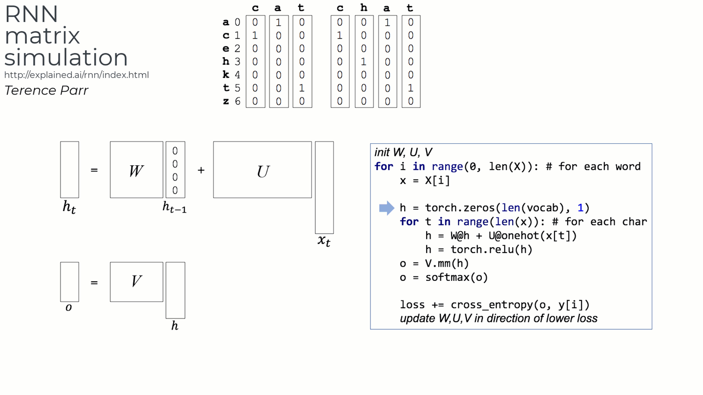

Terence Parr
Terence teaches in University of San Francisco's MS in Data Science program and you might know him as the creator of the ANTLR parser generator.
Vanilla recurrent neural networks (RNNs) form the basis of more sophisticated models, such as LSTMs and GRUs. There are lots of great articles, books, and videos that describe the functionality, mathematics, and behavior of RNNs, and I'm not trying to add yet another rehash here. (See below for a list of resources.) My goal is to present an explanation that avoids the neural network metaphor, stripping it down to its essence—a series of vector transformations that result in embeddings for variable-length input vectors.
My learning style involves pounding away at something until I'm able to re-create it myself from fundamental components. This helps me to understand exactly what a model is doing and why it is doing it. You can ignore this article if you're familiar with standard neural network layers and are comfortable with RNN explanations that use them as building blocks. Since I'm still learning the details of neural networks, I wanted to (1) peer through those layers to the matrices and vectors beneath and (2) investigate the details of the training process. My starting point was Karpathy's RNN code snippet associated with The Unreasonable Effectiveness of Recurrent Neural Networks and then I absorbed minibatch details from Chapter 12 from Jeremy Howard's / Sylvan Gugger's book Deep Learning for Coders with fastai and PyTorch and Chapter 12 from Andrew Trask's Grokking Deep Learning.
 In this article, I hope to contribute a simple and visually-focused data-transformation perspective on RNNs using a trivial data set that maps words for "cat" to the associated natural language. The animation on the right was taken (and speeded up) from a youtube clip I made for this article. For my actual PyTorch-based implementations, I've provided notebooks that use a nontrivial family name to natural language data set:
still working on this..
{kind=link}